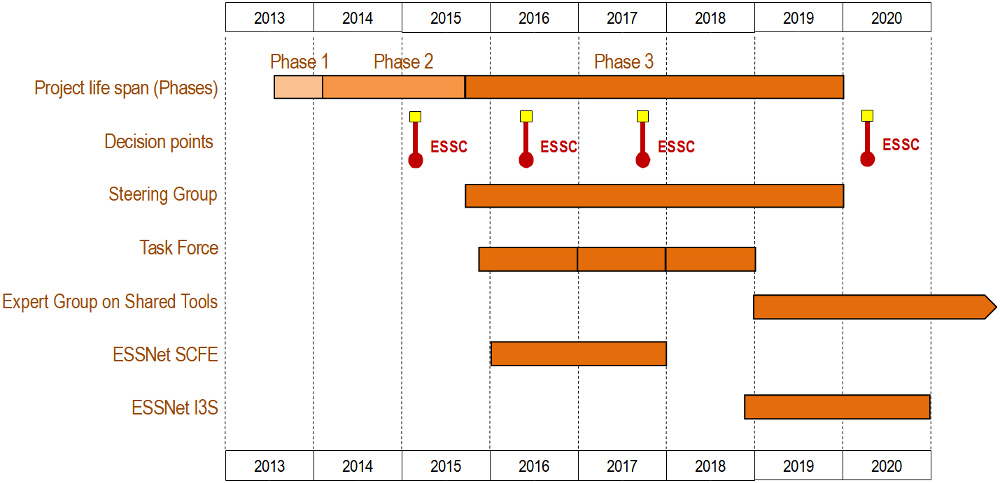
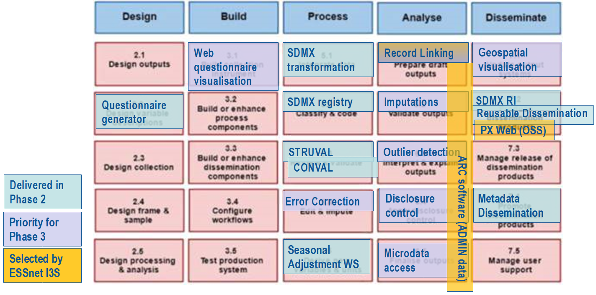

I3S ESSnet
Final meeting
Introduction
Housekeeping
- sound and video off, please
- questions are welcome in the chat
- meeting is recorded
The I3S project
- Context
- Project goals & organization
I3S context
Pierre Peyronnel - Eurostat A.3
Timeline
Services delivered
What do we do after?
Keep fostering collaboration and the community by:
- Continued use of the CSPA Service Catalogue as a convergence point (and its collaborative maintenance too)
- Rely on the Expert Group on sharing tools as a forum
- Use communication channels to exchange ideas, plans, work
Document References & Communication channels
I3S goals & organization
Objectives
- Extend previous work with a practical view
- More concrete reuse cases
- Guidelines, cookbooks
- Architecture and deployment
- Success stories and communication
Consortium
 |
Work packages
| Number | Name | Leader |
|---|---|---|
| 1 | Services | Istat |
| 2 | Architecture | SCB |
| 3 | Deployment | SSB |
| 4 | Success stories | INE |
| 5 | Coordination | Insee |